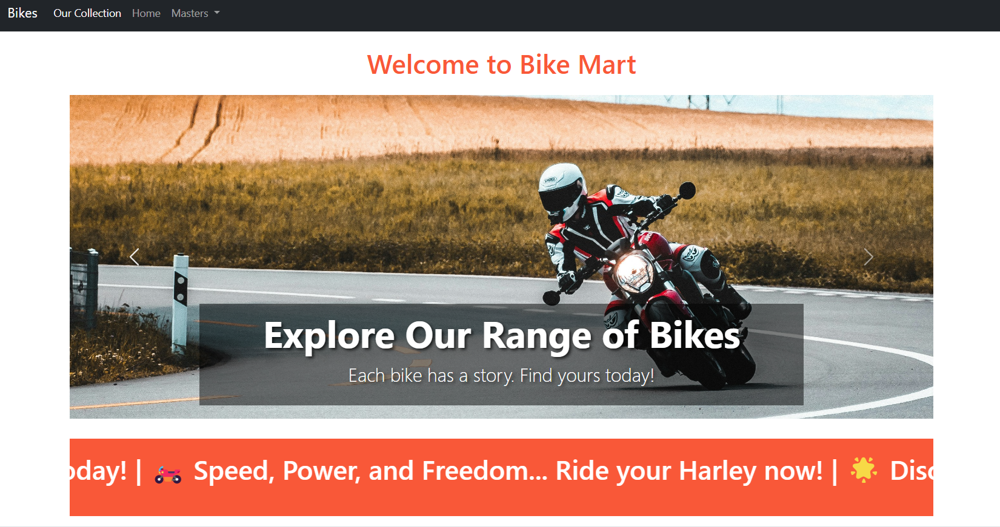

The Bike CRUD Operation project allows users to manage bike information, including adding, viewing, updating, and deleting bike records. This project demonstrates my ability to integrate a database with a .NET MVC application, implement CRUD functionality, and display dynamic data in views.

Key Features
CRUD functionality (Create, Read, Update, Delete)
Database connection with SQL Server
User-friendly interface built with Bootstrap
Steps to Build
Setup: Initialized a new .NET MVC project in Visual Studio and installed necessary packages.
<
Database Design: Created a `Bike` table in SQL Server with fields like Name, Brand, and Price.
Model Creation: Defined a `Bike` model class to interact with the database.
Controller Setup: Developed a `BikeController` to handle CRUD operations and pass data to views.
View Creation: Built Razor views to display and manage bike records in a user-friendly interface.
Testing: Tested the application to ensure all CRUD operations function correctly.
Conclusion
The Bike CRUD Operation project demonstrates my ability to create a full-stack web application using .NET MVC. By integrating a database, handling business logic in controllers, and building interactive views, this project showcases my skills in backend and frontend development.